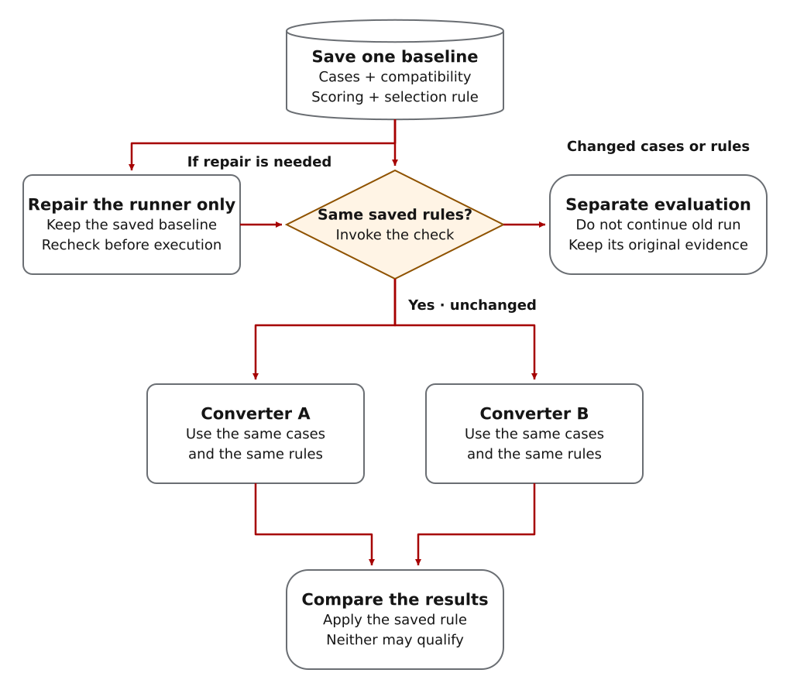
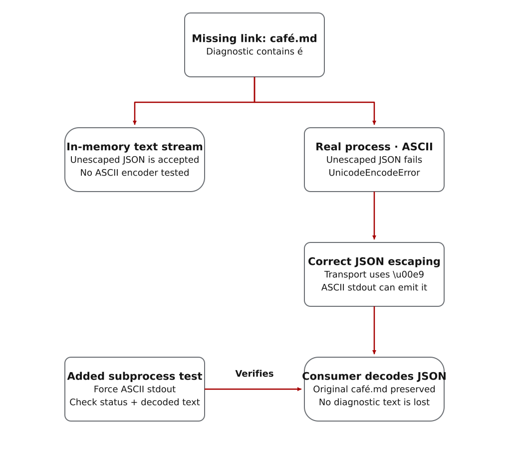
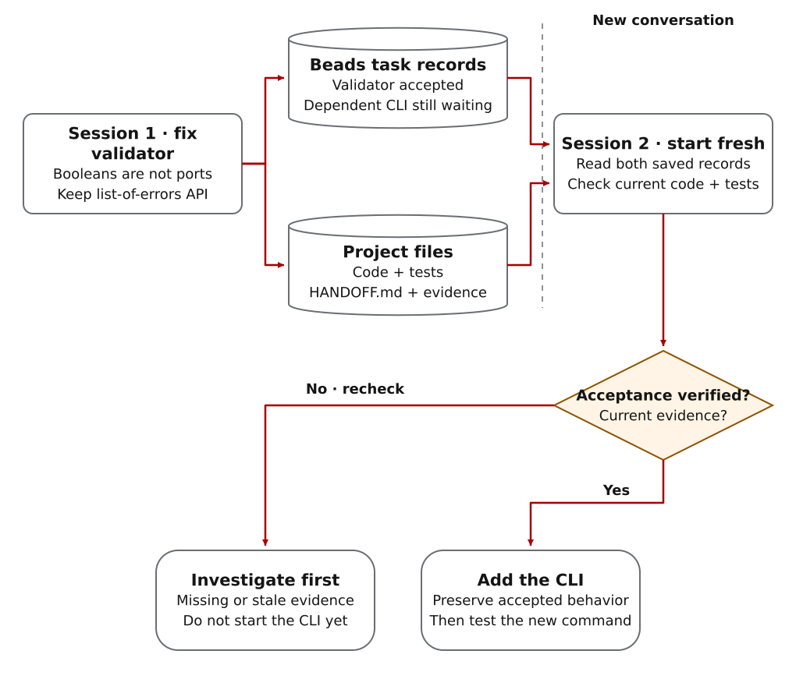
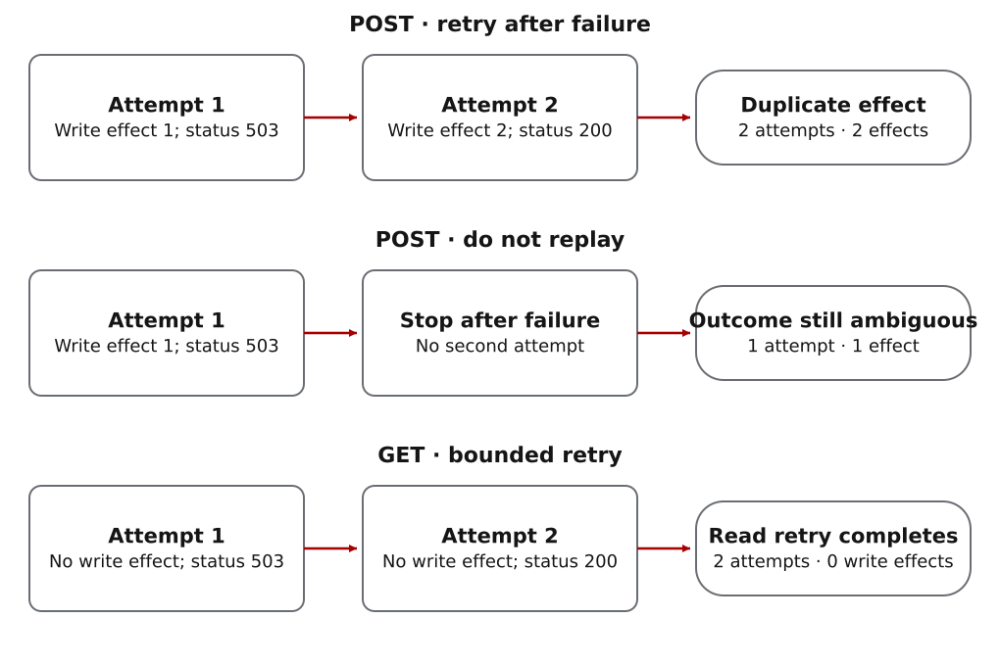
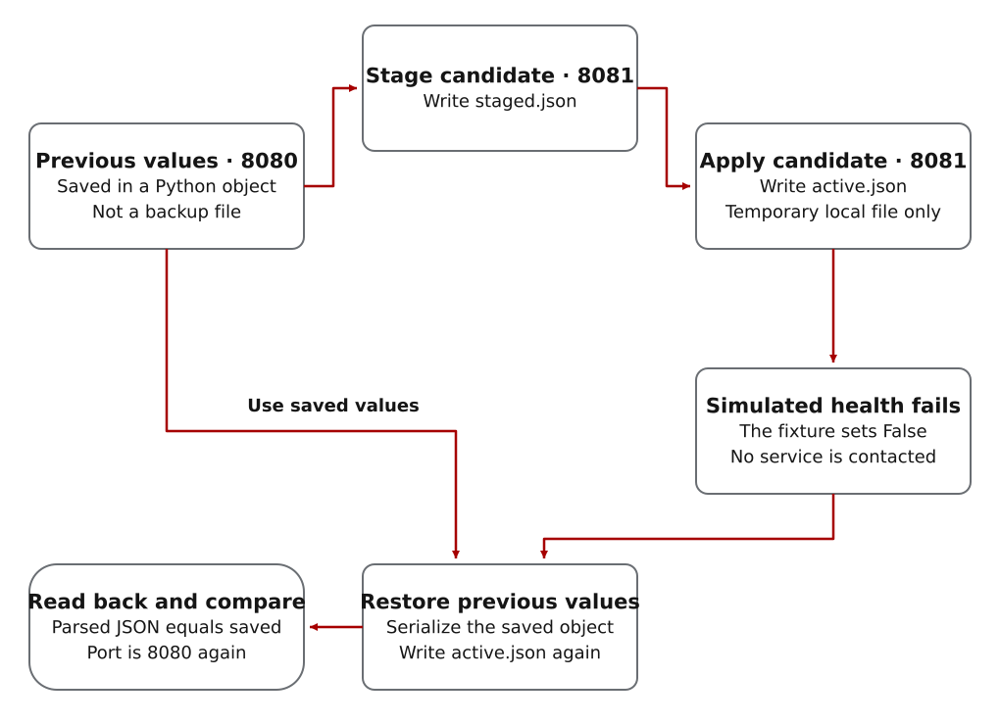

Choose the evidence you want to inspect
- Implementation behavior
- The component tests below are small automated tests of individual helpers. They check how CWO handles local-model responses and conflicting claims using deliberately written inputs. They do not call live providers.
- Recorded agent work
- The documentation-command review and two-session configuration-validator exercise show actual review and continuation at small scale.
- A design for your project
- The migration and retry workflows specify work still to be demonstrated. Neither has been run end to end. Later runnable exercises use deliberately written retry, rollback and memo inputs, not live specialist conversations.
Illustrative planning example · not a live model run
Two second opinions change a retry plan before coding starts
The lead proposes “retry twice.” A cloud reviewer challenges the assumption that a timeout means no job was created. A local vLLM reviewer asks what survives a client restart. Synthesis turns those questions into a prerequisite server check, a conditional retry design and lost-reply/restart tests—not a majority vote.
Read the initial plan, separate findings and revised tasks, then adapt the planning request. The findings are authored to explain the process; they are not returns from real reviewers.
Automated component tests · deliberately written inputs · no live model call
A local answer must be usable before it becomes review evidence
These are separate tests of existing components, not stages from a fabricated single run.
- Usable response: The successful-response test checks a complete GLM-5.3 response, normalized review text and removal of private reasoning.
- Wrong advertised model: The exact-model test asserts that preflight fails before the chat request is sent.
- Incomplete response: The invalid-final test withholds an answer cut short by its length limit, saves a hash for investigation and produces no normalized return.
- Eligible local finding: The input-eligibility test uses accepted local and cloud input records and checks that the local input can be primary evidence—meaning it may support synthesis directly, not act as the lead or gain edit permission.
Checks vary by profile; these fixtures do not qualify your endpoint or attest deployed model weights. Follow the approved local-review sequence.
Automated claim-comparison test · deliberately written claims
Two inputs describe different encryption settings
The fixture supplies accepted records claiming AES-256-GCM and AES-128-CBC for the same cipher setting. The helper reports disagreement and recommends escalation; when comparison is required, the enclosing synthesis is blocked pending resolution. The neighboring matching-claims test produces an informational result, not validation.
No model produced these inputs and no actual encryption configuration is established. The lead must check the implementation to resolve the claim. Inspect the test, invocation boundary and limits.
Proposed demonstration · not executed
Compare converters without removing the cases they fail
You need to convert configuration files to a new format without losing required settings. Compare two converters using the same synthetic files, including invalid inputs and compatibility cases.
What can go wrong: one converter fails a difficult input. Removing that file may make its tests pass, but no longer tells you whether it meets the original requirements.

- Save before testing
- Save the case set, compatibility requirements, scoring and selection rule before either converter runs.
- Decision to make
- Fix the converter under the original requirements. If you want to change the requirements, begin a separate evaluation and keep the earlier result.
- What CWO checks
- The frozen-protocol validator compares recorded evaluation fields and the files used for execution when invoked. It can reject a changed case set or threshold before candidate work. It cannot infer an unrecorded change in intent.
- How to test this
- A full demonstration would need three checks: the original evaluation continues unchanged; a test-runner repair leaves the evaluation unchanged; an attempted requirements change is rejected before either converter runs.
- Expected result
- A compatibility report explaining which converter meets the original rule—or why neither does.
The existing protocol regressions test the checking component, not this complete migration. No converter implementation, integrated fixture or agent-led migration result is supplied here.
To use this design, start an evaluation task with your actual files, requirements and allowed repairs. There is no runnable migration demo command on this page.
Proposed demonstration · not executed
Retry a job request without creating a duplicate
Your client submits a job. The server creates it, but the reply never reaches the client. Retrying may create a second job; giving up may leave the client unsure whether the first exists.
What the reviewers disagree about: one says to retry after a temporary failure; another warns that repeating a write can duplicate its effect. The missing fact is whether the service makes repeated submissions behave like one submission. That property is called idempotency.
- Define the required behavior
- One user submission must not create duplicate jobs. Describe what the server does when it creates the job but loses the reply.
- Separate the claims
- Record each recommendation, what it assumes about duplicate prevention and what evidence supports that assumption. Keep rejected, missing and unresolved advice visible.
- What CWO checks
- CWO checks which review inputs may be used and can compare explicit claims when the required source and claim fields are present. The lead must still verify the service guarantee; arbitrary review prose is not automatically converted into proven claims.
- How to test this
- Build a deterministic server simulator that counts created jobs when the reply is lost. Compare ordinary retries with retries backed by a defined duplicate-prevention guarantee.
- Expected result
- Client behavior, regression tests and a saved decision naming the exact service guarantee that makes the retry policy safe.
No integrated simulator/client demonstration or live multi-provider review is supplied here. The smaller runnable retry exercise below includes an attempt-and-effect diagram based on authored inputs. It does not simulate a lost reply or demonstrate duplicate prevention, and it is not evidence from independent providers.
For your own design, choose a permitted specialist route and agree on the test that will settle the question. Reviewer confidence cannot supply a missing service guarantee.
Review caught a bug in a documentation-checking command
Observed local work: a Python command checks documentation links, including links to older pages and sections. The task was to add a JSON report other tools could read while preserving its human-readable report, list-of-errors API and exit-status meanings (0, 1 and 2).
The first implementation passed eight tests. Independent review noticed that a missing café.md link would crash JSON output when the process’s output encoding was ASCII. The lead reproduced that failure, changed JSON escaping, and added an actual subprocess regression. The resulting strings stay intact when a consumer decodes the report.
Observed finding: the Unicode test used an in-memory string stream, so it could not expose the encoding failure of a real process.

Actual CLI output after correction
Terminal
python3 scripts/check_documentation.py --jsonRecorded output
{"version": 1, "ok": true, "errors": []}Eleven focused tests passed, including forced-ASCII JSON output, exact Boolean types, human subprocess compatibility and usage errors. Inspect the work record and reproduction commands.
Execution scope: observed local CLI maintenance with independent internal specialist review. It does not demonstrate supervised native-worker execution or native concurrency. The saved handoff is prepared; fresh-agent continuation of this case has not yet been observed.
Inspect task prerequisites · Read the recorded task decisions.
A change that survives a fresh session
The supplied Python program checks whether a service configuration has a valid server name and port number. Session one fixes its validation. Session two starts without the earlier conversation and adds a terminal command, preserving the requirement that boolean values are not valid port numbers.
Initiating prompt; full runnable steps in Start Here
Use $complex-work-orchestration. In a disposable project, fix the validator first and record its accepted behavior. Create a dependent CLI task but leave it unstarted. Save task IDs, exact checks and a readable handoff. Continue in a fresh session using only project files and Beads. No production access or publication.Task split: keep the list-of-errors API and repair only the validator in session one. CWO saves two linked tasks. Session two checks the accepted validator before adding the CLI. This small exercise stays in the main thread; it does not need a delegated worker.

Validator: accepted; booleans are not ports.
CLI: depends on accepted validator; same error interface.
Evidence: tests, diff, task records, HANDOFF.md.
Authority: disposable local project only.The excerpt shows the intended dependency, not actual task IDs. In the earlier recorded run, two fresh sessions produced the checker, 11 passing project tests and two completed linked tasks. Additional contract checks ran independently afterward. Read the execution versions and limits.
Recovery: if the next session cannot establish acceptance, recheck files/tests and task records before implementing the CLI; mark missing evidence honestly. Not worth it: a throwaway one-line conversion with no meaningful continuation.
Scripted exercise: show why retrying can create duplicate jobs
One proposal says to retry every request after temporary failures. Another warns that a repeated write can create the same job twice. These are authored proposals written for the exercise, not returns from real reviewers.
Initiating prompt
Use $complex-work-orchestration to review our retry design in a synthetic fixture. Compare “retry all transient failures” against “never replay non-idempotent writes.” Reproduce the counterexample; do not call a real API. Preserve both proposals, evidence and the owner’s decision. Do not implement until the acceptance invariant is settled.Decision: does the service prevent repeated requests from creating duplicate jobs? This fixture assumes it does not. The test counts the resulting jobs so the decision rests on the behavior, not a vote between reviewers.

Invariant: a POST must not silently produce two effects.
Proposal A, POST: 2 attempts, 2 effects — rejected.
Proposal B, POST: 1 attempt, 1 effect — ambiguity surfaced.
Bounded GET retry: 2 attempts, 0 write effects — permitted.
Decision: retry reads; do not replay ambiguous writes.Concrete output: a decision record with its assumption, counterexample, accepted policy and rejected policy. The executable fixture asserts each count. This is not a complete HTTP retry library.
Recovery: if later evidence proves server-side idempotency, reopen that assumption in a new bounded task; do not erase the earlier evidence. Not worth it: a retry-free offline transformation with no disputed effect.
Scripted exercise: restore configuration after a failed health check
A configuration file can be correctly structured while the service fails to start. Before a rollout, define how to check service health and how to restore the previous configuration if that check fails.
Initiating prompt
Use $complex-work-orchestration to prepare a lab-only configuration change. Identify the execution host and exact writable paths before any mutation. Stage the candidate, preserve the prior bytes, define a health check and rollback trigger, then verify restored state after a failed check. No production hosts, privilege escalation, deployment or remote access is authorized.Operator decision: name the real lab host and approve any actual service action in a separate task. CWO must not infer production authority from an infrastructure-flavored prompt.

Boundary: temporary local files only; no network requests.
Stage: port 8081, prior port 8080 preserved.
Health: intentionally simulated failure.
Recovery: restore prior content, reread active.json.
Acceptance: restored_port=8080; rollback_verified=true.Concrete output: a run record and verified restoration of the parsed configuration values. Unlike the stronger real-work prompt above, the fixture saves previous values only in memory and does not assert byte-for-byte restoration. Its temporary files are removed at the end. It does not prove service restart, remote reachability, a real health check, or lab deployment.
Recovery: failed rollback stops the affected operation; retain the backup and evidence, do not continue dependent rollout. Not worth it: inspecting a static file without any intended change.
Scripted exercise: write a recommendation from supported facts
A team must choose an error-output format. Its source notes contain a requirement, a reproducible fact and an unsupported speed claim. The memo should use the first two and explicitly exclude the speed claim, even if it sounds persuasive.
Initiating prompt
Use $complex-work-orchestration to turn the supplied synthetic notes into an output-format decision memo. Trace every material claim to a note, run the available representation check, and exclude unsupported performance assertions. Produce decision.md plus claim-sources.json. Keep unresolved client compatibility as a human decision. Do not invent research, contact external sources, or publish.Decision: confirm that downstream clients accept the output format. The memo links its recommendation to the requirement and reproducible fact, and records why the unsupported claim was excluded.
N1: clients need a list of messages — requirement.
N2: JSON round-trips the nested list — checked.
N3: JSON is always faster — unsupported, excluded.
Decision: JSON preserves the required shape (N1, N2).
Remaining: client compatibility, not an invented speed claim.Concrete output: the memo text and source mapping are returned in fixture JSON. The automated check verifies that representation. The source notes are deliberately written test inputs, not findings from external research.
Recovery: contradictory/new sources reopen only the affected decision, preserve earlier provenance, and rerun the corresponding check. Not worth it: paraphrasing one uncontroversial paragraph with no retained deliverable.
How a documentation project can use these records
This documentation project is a maintainer example, not independent proof of CWO’s quality. It began with a specific mismatch: policy selected Luna first while reader pages still described Spark as the normal worker. Setup instructions also lacked a complete first project and fresh-session continuation. The work needed source checks, useful instructions and actual reader-path validation—not just new wording.
Initiating prompt for a documentation project
Use CWO to rebuild the human documentation around adoption. Audit current implementation and classify every document before editing. Give one editor ownership of the integrated copy. Build a complete novice project and a direct experienced-operator route. Map material claims to source evidence, preserve historical qualification, keep old URLs useful, and verify examples plus the rendered site. Do not change runtime policy or publish.Decision: choose the source revision and what may be published. Check product claims against implementation. Track source review, an initial connected set of pages, independent review, remaining edits and final validation as dependent tasks. A positive review does not establish that a tutorial was executed.
Decision: one canonical first-project sequence; README summarizes and links.
Source: active task-selected policy, installer/profile code and actual tests.
Maturity: exact host qualification is required; historical Spark records stay historical.
Artifact: README + reader pages + runnable examples + maintainer ownership map.
Compatibility: retain 16 page routes and 139 existing IDs.
Observed defect: four links existed in the repo but failed under the Pages subpath.
Correction: explicit source links plus a regression for the published-root boundary.Check the rewritten pages against their owning source, follow the tutorial through both sessions, run claim/link/example checks and inspect desktop, mobile and keyboard use. Keep internal audit records out of public navigation. If a link or command fails, preserve the earlier evidence, fix that defect and rerun the relevant check. This much coordination is unnecessary for a single typo.
Run the three scripted exercises without a model
These exercises require only Python 3, Git, and a CWO source checkout. You do not need Codex authentication, Beads, an installed skill, or a model call. Choose a new source-only evaluation folder. If ~/cwo-example-source already exists, use another name or inspect that checkout instead of deleting it.
Terminal
python3 --version
git --version
git clone https://github.com/gprocunier/complex-work-orchestration.git "$HOME/cwo-example-source"
cd "$HOME/cwo-example-source"
python3 examples/worked-evidence/run_examples.py --checkExpected: JSON with the retry effect counts, rollback_verified: true, and a memo excluding N3, the deliberately unsupported speed claim. All three exercises run in temporary local storage without model calls; generated temporary files are removed after their contents are captured in output. On failure, inspect the failing assertion; do not use production access to make a demo impressive.
For the actual agent exercise, use Start Here. For advanced controls, use Guides and Reference.